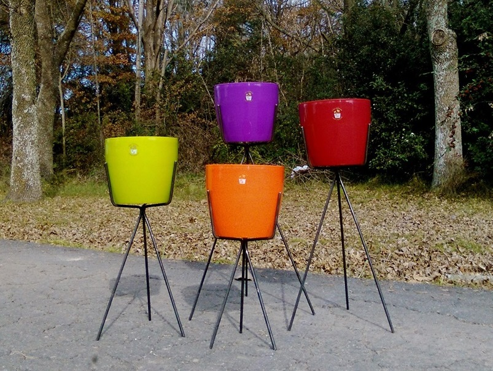

<div id="single-portfolio">
	<div id="portfolio-details" class="container">
		<a class="close-folio-item" href="#"><i class="fa fa-times"></i></a>
		
		<div class="row">
			<div class="col-sm-9">
				<div class="project-info">
					<h3>Masetero tripode</h3>
					<p>Masete tripode, muy elegante y resistente ideal para plantas de grandes hojas. Luce de lujo en cualquier ambiente.</p>
					<p>Es comodo de mover y no ocupa micho lugar. La avertura de las patas esta diseñado para evitar caerse con cualqier choque o golpe. si le interesa no dude en pedirlo por la seccion de mensajes, anotando el color que elija, su numero telefonico y su direccion</p>
				</div>
			</div>
			<div class="col-sm-3">
				<div class="project-details">
					<h3>Detalles</h3>
					<p><span>Tamaño: </span>0,20x0,20x0,60 Mts.</p>
					<p><span>Colores:</span>Negro, rustico, gris o cromado.</p>
					<p><span>Precio con maceta :</span> $700.</p>
					<p><span>precio sin maceta:</span> $500.</p>
				</div>  
			</div>
		</div>
	</div>
</div>